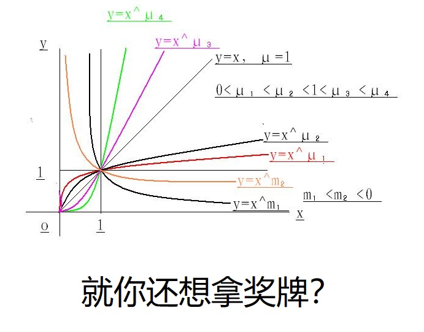

洛谷笔记 - P1010 [NOIP1998 普及组] 幂次方

题目描述
任何一个正整数都可以用 的幂次方表示。例如
同时约定方次用括号来表示，即 可表示为 。
由此可知， 可表示为
进一步：
( 用 表示)，并且 。
所以最后 可表示为 。
又如
所以 最后可表示为 。
输入格式
一行一个正整数 。
输出格式
符合约定的 的 表示（在表示中不能有空格）。
样例 #1
样例输入 #1
1315样例输出 #1
2(2(2+2(0))+2)+2(2(2+2(0)))+2(2(2)+2(0))+2+2(0)提示
【数据范围】
对于 的数据，。
代码
//P1010 [NOIP1998 普及组] 幂次方
//https://www.luogu.com.cn/problem/P1010
//https://www.luogu.com.cn/record/84433400
#include<iostream>
#include<cmath>
using namespace std;
void loop(int a){
for(int i=14;i>=0;i--){ //从最大的平方值开整
if(pow(2,i)<=a){ //找到最大平方值
if(i==1) cout<<"2";
else if(i==0) cout<<"2(0)"; //特殊处理
else{
cout<<"2(";
loop(i); // 在新的"2()"中重找幂，范围大幅度缩小
/*
1315=2^10+2^8+2^5+2^2+2^0
//a=10 2^(10)
a=3 2^(2^(2+1)+2)
//a=8 2^(8)
a=3 2^(2^(2+1))
//a=5 2^5
a=5 2^(2^(2)+1)
//a=2 2^(1)
//a=0 2^(0)
*/
cout<<")";
}
a-=pow(2,i); //除去已求数值
if(a){ //通过数值有无判断是否继续后附"+"号
cout<<"+";
}
}
}
}
int main(){
int a;
cin>>a;
loop(a);
cout<<endl;
return 0;
}参考
《题解 P1010 【幂次方】》——_xcc_ 的博客